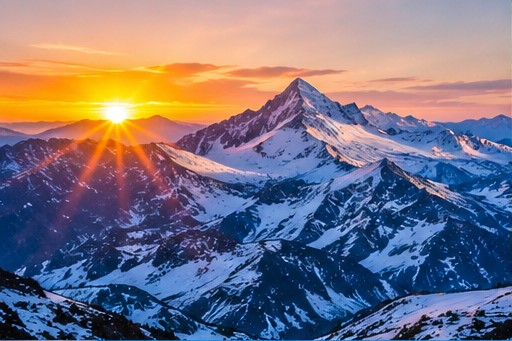
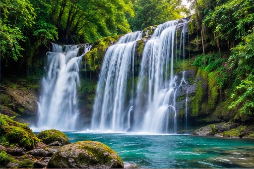
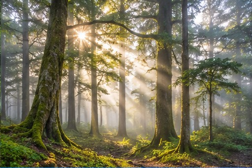
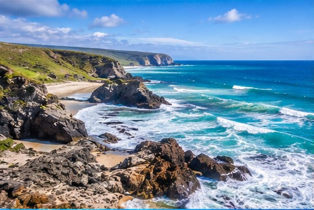
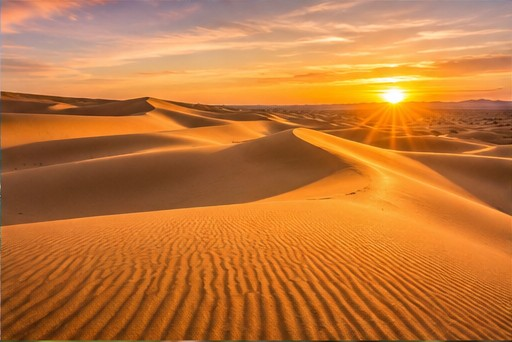
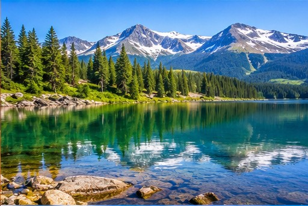
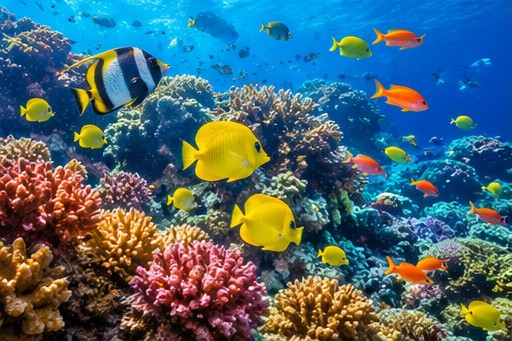
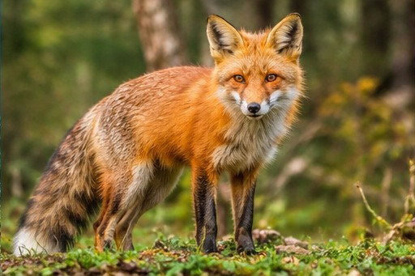
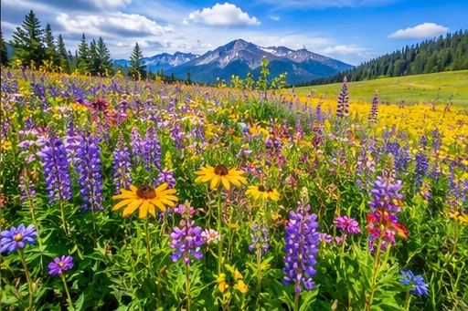

Discover the natural world
Nature is full of remarkable places, from towering mountain ranges and powerful waterfalls to quiet forests and peaceful lakes. Each landscape has its own colours, textures and atmosphere.
This gallery brings together nine scenes that celebrate the variety of our planet. Explore the images, read their captions and resize your browser to see the layout adapt to mobile, tablet and large screens.








